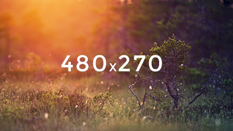

This example demonstrates how to use the automatic responsive image replacement that falls back to the next smallest media query.
Because the medium media query source is set, all media queries listed after medium will use this image.
.mqsync-responsive (default)
.make-responsive (custom)